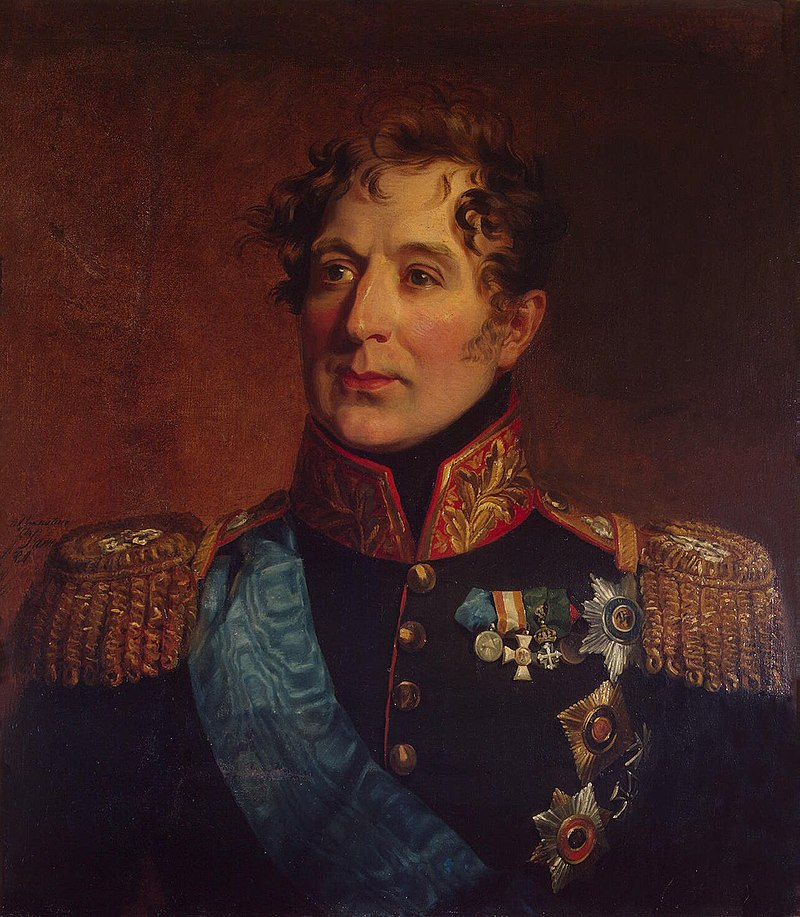
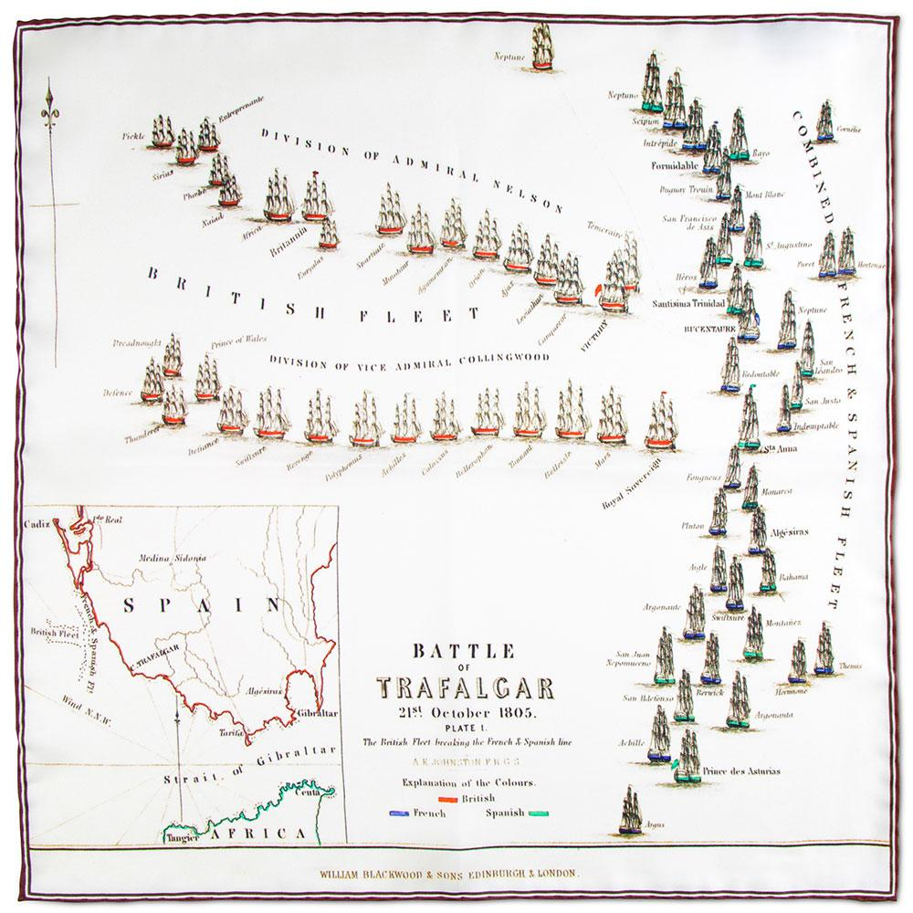
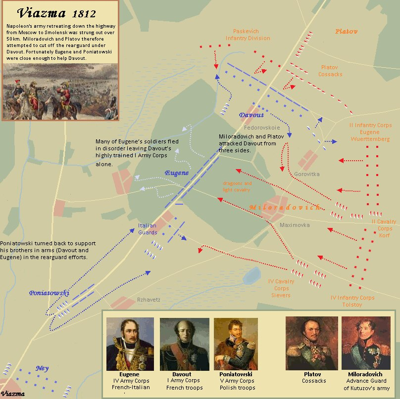
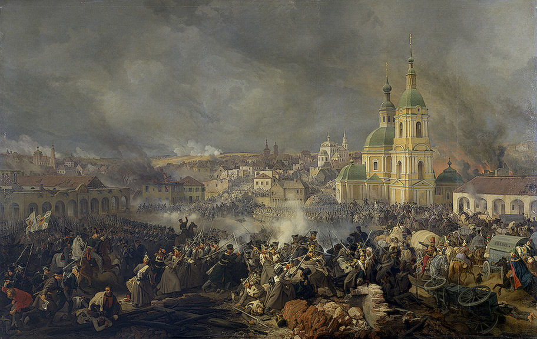
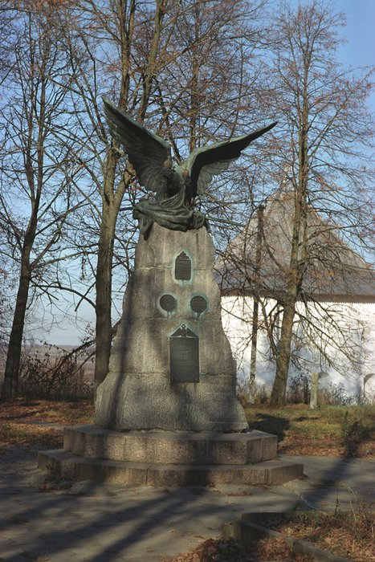

러시아의 트라팔가 - 비아즈마(Vyazma) 전투
게시: 2021-07-05T06:30:45+09:00
쿠투조프가 이런저런 욕을 많이 먹지만 나폴레옹 추격 전위대 지휘관으로 밀로라도비치(Mikhail Miloradovich)를 임명한 것은 무척 탁월한 선택이었습니다. 밀로라도비치는 나폴레옹보다 2살 어린 세르비아 출신의 귀족으로서, 러시아의 명장 수보로프(Alexander Suvorov) 장군이 수행했던 1799년 스위스 원정에도 참여하는 등 경험이 풍부한 지휘관이었고, 무엇보다 용감하기로 소문난 군인이었습니다. 그의 별명이 러시아의 뮈라(Murat)였다는 점을 고려하면 그의 성격을 충분히 짐작할 수 있었습니다. 결정적으로 그는 운이 무척 좋은 편이라는 점에서도 뮈라를 쏙 빼닮았습니다. 그는 항상 자랑하기를 50번 넘는 전투 속에서 단 한번도 부상은 커녕 생채기도 입은 적이 없다고 했습니다. 그가 결코 안전한 후방에서 노닥거리는 지휘관이 아님을 생각하면 이건 정말 대단한 운빨이었고, 군인이라는 직업은 그 누구보다도 행운을 필요로 하는 것이었습니다.

(밀로라도비치입니다. 그의 가문은 원래 세르비아 귀족이었으나, 그의 증조 할아버지 때 러시아 표트르 1세의 사주를 받아 당시 세르비아를 지배하던 오스만 투르크에 저항하는 반란을 일으켰다가 결국 실패하고 러시아로 도주했었습니다. 그는 어려서부터 군문에 들어갔고, 1805년 아우스테를리츠 전투 때는 나폴레옹이 함정으로 비워주었던 프라첸(Pratzen) 고지를 점거하고 포진했던 부대들 중 하나의 지휘관이기도 했습니다. 그는 나중에 상트 페체르부르그의 주지사를 맡는 등 잘 살았습니다만 일설에 따르면 그는 동성애자였다고도 합니다.) 퇴각하는 나폴레옹의 그랑다르메를 남쪽으로부터 추격하던 그가 지치고 굼뜬 그랑다르메의 후미를 따라잡은 것은 11월 2일 저녁, 비아즈마(Vyazma)라는 마을 근처에서였습니다. 밀로라도비치가 거느린 병력은 전위대답게 고작 보병 1만4천과 기병 3천5백 정도 밖에 되지 않았고, 거기에 대해 플라토프(Platov)가 거느린 5천의 코삭 기병들의 지원을 받고 있었습니다. 아무리 약해졌다고 해도 아직 8만 정도 되는 그랑다르메를 이 정도의 병력으로 덮칠 수는 없었습니다. 하지만 후퇴하는 모든 군대가 그러듯이 당시 그랑다르메는 선두와 후미의 거리가 무척 길게 늘어져 있어서, 선두에 선 나폴레옹의 근위대과 후위대를 맡은 다부의 제1군단 사이는 100km 가까이 되었습니다. 이런 상황에서 다부의 제1군단이 습격을 받는다고 해도 나폴레옹은 다부를 도울 방법이 없었고, 아마 포성을 듣지도 못했을 것입니다. 하지만 나폴레옹이 후위대로 다부를 임명한 것에는 다 이유가 있었습니다. 다부는 나폴레옹 휘하 원수들 중 젊은 편에 속했으나 실력으로는 명실상부한 1인자였고, 그가 거느린 제1군단은 나폴레옹의 근위대와도 필적할 정도로 잘 훈련된 정예병들이었습니다. 물론 네만 강을 건널 때 3만이 넘던 제1군단은 이미 1만4천 정도로 줄어들어 있었고, 식량 부족으로 인해 지치고 말이 부족해 포병 전력이 극도로 약화된 상태였습니다. 그리고 결정적으로, 남쪽으로부터 지름길로 달려오던 밀로라도비치가 다부를 따라잡았을 때, 밀로라도비치는 이미 비아즈마를 통과한 외젠의 제4군단과 포니아토프스키의 제5군단, 그리고 아직 비아즈마를 통과하지 못한 다부의 제1군단 사이에 끼어들 수 있는 위치에 있었습니다. 이건 트라팔가 해전에서 넬슨이 써먹었던 수법, 즉 적의 종대를 중간에서 끊어 먹고 뒤에 처진 적의 후미를 포위 섬멸할 수 있는 절호의 기회였습니다. 밀로라도비치는 다음날 아침 일찍 다부를 공격하기로 했습니다.

(1805년 10월 21일 트라팔가 해전에서 넬슨이 영국 함대가 프랑스-스페인 연합 함대의 허리를 잘라먹는 광경입니다. 밀로라도비치의 습격도 딱 이 모양새였습니다.) 하지만 중대한 문제가 있었습니다. 그의 보병 사단들이 아직 다 도착하지 않았던 것입니다. 그렇다고 그의 보병 사단들을 기다리며 허송세월 하다가는 다부도 비아즈마를 통과해버릴 수 있는 상황이었습니다. 이 문제를 극복하기 위해 밀로라도비치는 플라토프의 코삭 기병대를 이용하기로 했습니다. 그의 기본 계획은 이랬습니다. 먼저 우월한 포병 전력을 앞세워 비아즈마 서쪽을 통과 중인 외젠의 제4군단 후미 수송대를 공격하고, 동시에 플라토프의 코삭 기병대가 비아즈마 동쪽에서 비아즈마를 향해 행군 중인 다부의 제1군단 후미를 공격하기로 했습니다. 이렇게 코삭 기병들을 투입하는 것은 그냥 단순히 다부의 발목을 잡아두려는 것이었습니다. 상대가 정규 기병이든 코삭 기병이든 기병 공격을 당하는 다부 입장에서는 방진을 짜서 방어를 해야 할 것이고, 그러자면 걸음을 멈출 수 밖에 없을 거라는 판단이었습니다. 그렇게 포병을 앞을 막고 코삭 기병이 뒤를 노리는 가운데, 그의 보병 사단이 도착하면 비아즈마 동쪽 외곽에서 다부를 끝장낸다는 것이 기본 계획이었습니다. 이 계획은 처음에는 멋지게 시작되었습니다. 11월 3일 아침 8시, 밀로라도비치 휘하의 정규 기병대가 먼저 외젠의 제4군단 후미의 수송대를 공격했고 이어서 계획대로 러시아 포병대가 도로상에 늘어진 그랑다르메 짐마차들을 향해 불을 뿜었습니다. 그랑다르메의 포병대는 말의 부족으로 인해 확연하게 전력이 크게 떨어져 있었기 때문에 그 포격에 제대로 대응을 하지 못했고, 외젠의 수송대는 무자비하게 쏟아지는 러시아 포탄을 뒤집어 쓰고 우왕좌왕하며 도망칠 수 밖에 없었습니다. 곧 비아즈마 서쪽 도로는 밀로라도비치의 소수 병력이 차지하고 다부를 나머지 그랑다르메로부터 고립시키는데 성공했습니다. 이와 동시에 비아즈마 동쪽에서는 지친 다부의 제1군단을 코삭 기병들이 덮쳤습니다. 예상대로 다부는 각 부대들이 방진을 형성하고 방어 태세를 취하도록 했고, 제1군단은 발이 묶였습니다. 이제 남은 것은 밀로라도비치의 보병 사단들, 즉 오스테르만-톨스토이(Ostermann-Tolstoy)와 외젠(Eugene of Württemberg)의 사단들이 빨리 현장에 도착하는 것 뿐이었습니다. 이들은 약 2시간 뒤, 즉 10시 경에는 도착이 예상되었습니다. 밀로라도비치는 딱 2시간만 이 상태가 유지되기를 바랬습니다.

(11월 3일 비아즈마 전투의 상황도입니다.) 그러나 다부의 여기서 패배할 운명이 아니었습니다. 일단 다부의 병사들은 확실히 잘 훈련된 정예답게, 굶주리고 지친 상태에서도 단단한 방진을 짜고 침착한 머스켓 사격을 퍼부으며 코삭 기병들의 돌격을 효과적으로 막아냈습니다. 코삭들은 원래부터 이런 대규모 전투에서는 믿을 수 없는 전력이었는데, 아니나 다를까 몇 번 머스켓 일제 사격을 받아보고는 곧 투지를 상실하고 우르르 후퇴를 해버렸습니다. 거기에 더해, 밀로라도비치가 예상하지 못한 사태가 벌어졌습니다. 예상과는 달리, 외젠과 포니아토프스키의 군단들이 후방에서 들려오는 포성 소리를 듣고는 즉각 부대를 이끌고 다부를 도우러 왔던 것입니다. 비록 많이 망가진 상태라고 해도, 그랑다르메는 아직 하나의 온전한 전쟁 기계였고 결코 위기에 빠진 다부의 제1군단을 모른 척 하지 않았습니다. 외젠과 포니아토프스키의 군단들이 몰려오자, 소수의 포병과 기병으로 길을 막고 있던 밀로라도비치는 길을 터주고 다시 남쪽으로 후퇴할 수 밖에 없었습니다. 이렇게 길이 뚫리자, 다부의 제1군단은 외젠의 제4군단이 쳐준 방어선 뒤에서 서둘러 후퇴를 계속할 수 있었습니다. 하지만 밀로라도비치도 결코 만만한 지휘관이 아니었습니다. 그제서야 도착한 오스테르만-톨스토이와 외젠의 사단들을 합해도 보병 병력 수에서는 그랑다르메 측이 월등히 우월했으므로, 밀로라도비치는 보병전에서 대해서는 아예 포기를 하고, 화력으로 승부를 보기로 했습니다. 이런 난리를 겪는 와중에도 그랑다르메 측에서 날아오는 포탄이 눈에 띄게 보잘 것 없다는 것을 보았기 때문이었습니다. 그는 아예 스몰렌스크-모스크바 대로 옆에 포병대를 평행으로 주욱 방열해놓고는 연습 포격을 하듯 여유있고 꾸준하게 포탄을 쏘아보냈습니다. 대로 위로 느릿느릿 행군하는 다부의 병사들은 이 포격에 그대로 노출되어 픽픽 쓰러졌습니다. 원래 당시 보병들은 스스로를 자조적으로 대포밥이라고 부를 정도로, 보병이 포탄에 희생되는 것은 너무나 당연한 일이었습니다. 이런 일에 보병의 사기가 떨어져서는 안되었고, 더군다나 제1군단처럼 정예병들의 경우는 더욱 그랬습니다. 그러나 보병들이 적의 포격에도 용기를 잃지 않을 수 있는 이유는 곧 아군 포병대가 적의 포병대를 제압해줄 것이라는 믿음이 있기 떄문이었습니다. 그러나 지금 이 상황에서는 말단 병사들에게도 아군의 포병대가 전혀 대응을 하지 못하는 것이 뻔히 보였습니다. 그러면서 여태까지는 보지 못했던 일이 벌어지기 시작했습니다. 다부의 휘하에서 언제나 믿음직한 모습을 보여주던 제1군단 병사들의 대오가 우르르 무너지면서 외젠의 제4군단의 뒤편으로 정말 패잔병처럼 무질서하게 달아나기 시작한 것입니다. 비록 현장에 있지는 않았지만, 나폴레옹의 마복시인 콜랭쿠르(Armand de Caulaincourt) 장군은 이렇게 다부의 제1군단병들이 무너지던 순간부터 나폴레옹의 러시아 원정군이 군대로서의 정상 동작을 멈추기 시작했다고 평가했습니다.

(비아즈마 전투를 묘사한 전쟁화입니다.) 이렇게 다부의 군단이 무너지는 마당에 외젠의 부대라고 무사할 수는 없었습니다. 이들은 대포알을 피해 모두 좁은 비아즈마의 골목길과 가옥 속으로 숨어들어갔고, 다부와 외젠, 포니아토프스키는 노상에서 간단히 회의를 갖고는 '이 상태에서 반격은 무리이고, 빠른 후퇴만이 살 길이다'라고 결론을 내렸습니다. 그러나 후퇴도 말이 쉽지 결코 실행에 옮기기는 쉬운 일이 아니었습니다. 위기에 빠진 이들을 구원한 것은 네(Michel Ney)의 제3군단이었습니다. 훨씬 앞에 있었던 네까지 되돌아와서 이들을 지원해준 것입니다. 비교적 지치지 않은 네의 제3군단이 몸으로 러시아군과 대치하며 막아내는 동안, 다부와 외젠, 포니아토프스키 등은 병력을 이끌고 비아즈마를 통과하여 후퇴했고, 네도 비아즈마에 불을 지르고 개울에 놓인 다리를 끊고는 후퇴했습니다. 이렇게 전멸의 위기에 빠졌던 다부의 군단은 다른 군단들이 몸을 날려 도와준 덕분에 상처투성이 몸이나마 빼서 빠져나올 수 있었습니다. 그러나 이 비아즈마 전투는 그랑다르메로서는 심각한 패배였습니다. 러시아 원정이 시작된 이후, 실제 전투에서 완패를 당한 것은 이번이 사실상 처음이었습니다. 이 전투에서 그랑다르메는 약 3천5백의 병력을 잃고 4천이 포로로 잡혔습니다. 거의 작은 군단 하나를 통째로 날려먹은 것과 같은 피해였습니다. 그에 비해 러시아군의 사상자는 1천8백 정도에 불과했습니다. 무엇보다, 그랑다르메는 전장에서 허둥지둥 달아나는 흉한 꼴을 보였고 군기도 2개나 빼앗기는 불명예를 당했습니다. 게다가 여기서 까딱했다간 다부 뿐만 아니라 외젠과 포니아토프스키, 네의 군단까지 모조리 섬멸당할 뻔 했던 셈이었습니다.

(오늘날 비아즈마에 있는 러시아군 승전비입니다. 러시아의 상징 쌍두 독수리가 프랑스 군기를 찢고 있습니다.)
반대로 러시아군의 입장에서는 매우 아쉬운 전투였습니다. 네의 군단까지 합해서 그랑다르메 전체 병력의 거의 절반에 가까운 병력을 포위 섬멸할 수도 있었으나 결국은 다 놓친 결과를 얻었기 때문이었습니다. 러시아군 고위 장성들의 복장이 터지게 만든 것은 바로 쿠투조프의 본대 6만5천이 불과 4km 남쪽에서 하루 종일 빈둥거리며 가만히 있었다는 점이었습니다. 불과 1시간만 행군하면 충분히 전장에 도착할 수 있었는데도 쿠투조프는 꿈쩍도 하지 않았습니다. 언제나 쿠투조프의 자리를 탐냈던 베니히센이 연달아 '당장 진격하자'는 메시지를 보내자 쿠투조프는 '한번만 더 이런 전갈을 보낸다면 다음에는 그걸 들고온 전령의 목을 매달 것'이라고 협박까지 하며 그런 공격 요청을 무시했습니다. 쿠투조프는 좋게 말해서 리스크 관리를 하는 지휘관이었고 나쁘게 말하면 너무나 복지부동하는 보스였습니다. 그러나 결과적으로는 쿠투조프가 옳았습니다. 불과 3일 뒤, 쿠투조프의 러시아군보다 훨씬 더 무서운 것이 그랑다르메를 덮쳤기 때문이었습니다. Source : 1812 Napoleon's Fatal March on Moscow by Adam Zamoyski
https://steamcommunity.com/sharedfiles/filedetails/?l=koreana&id=1190964554
https://en.wikipedia.org/wiki/Battle_of_Vyazma